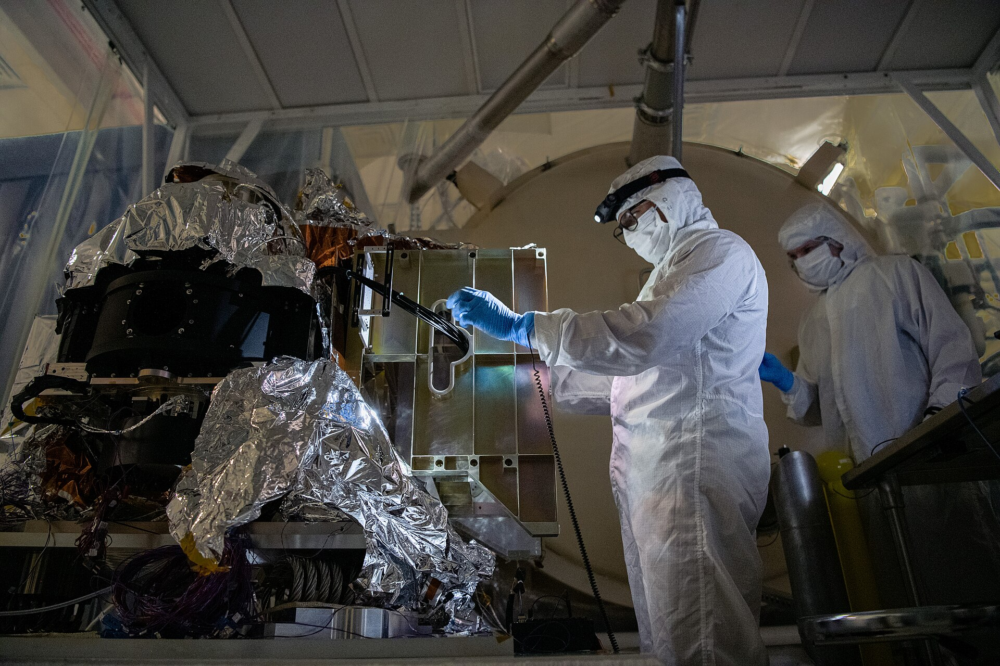

00:00:00:00
HYP-FRAMES / LAB
PIPELINE DOCUMENTAIRE
Un document.
Une vidéo.
AsciiDoc annoté →
HyperFrames
→ MP4
ENGINE
HYPERFRAMES CLI
BUILD
GRADLE / N2
SCÈNE
01 / 05

FIBRE / SIGNAL
00:00:06:00
CHAÎNE / 02
Chaîne de production
Du texte
au signal.
01
AsciiDoc
source annotée
02
HTML
composition + timeline
03
CLI
rendu headless
04
MP4
1920 × 1080 / 30 fps
00:00:18:00
DSL / 03
Le document EST la composition
src/docs/index.adoc
01
[.hyperframes-composition#intro]
02
== Un document
03
04
[.hyperframes-animation, type=gsap]
05
----
06
window.__timelines = {};
07
const
tl = gsap.timeline({ paused:
true
});
08
tl.from(
"#intro"
, { opacity:
0
});
09
window.__timelines[
"intro"
] = tl;
10
----
Un document.
Une vidéo.
FRAME 042 / 1440
Une section = une scène. Un bloc = une timeline.
Le même fichier produit
la vidéo
et le
document
.
COMPOSITION
GSAP
SEEKABLE
00:00:30:00
QUALITÉ / 04
Sortie de production
Zéro
improvisation.
1920
×
1080
FRAME FIXE
30
fps
TIMELINE DÉTERMINISTE
0
réseau
RENDU HORS-LIGNE
100
%
REPRODUCTIBLE
LE MÊME TEMPS → LES MÊMES PIXELS
SCÈNE 04 / 05
00:00:40:00
FIN / 05
Du document à la vidéo
AsciiDoc
→
MP4
Un seul pipeline. Aucun montage manuel.
cccp.education
OPEN SOURCE
talaria.school
FORMATIONS
cheroliv.com
AUTEUR
HYPERFRAMES GRADLE / 0.0.9
FIN